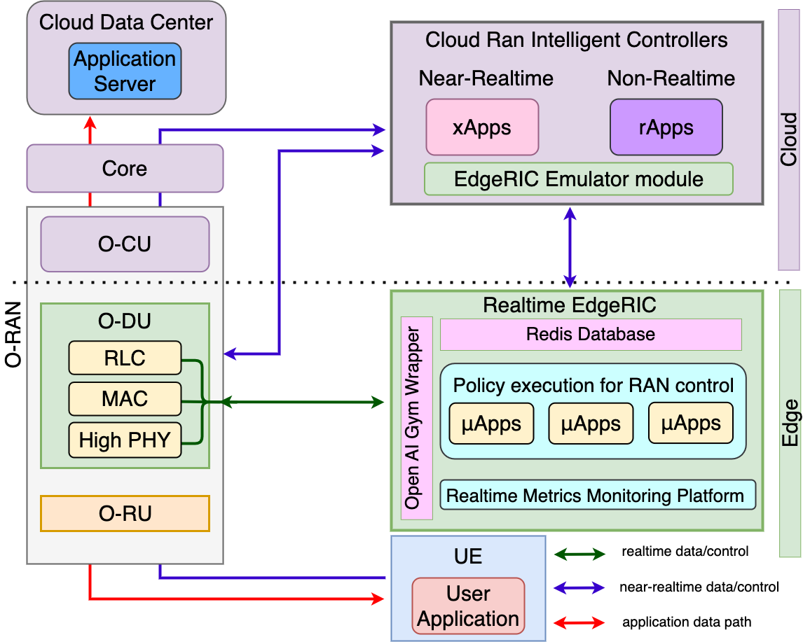
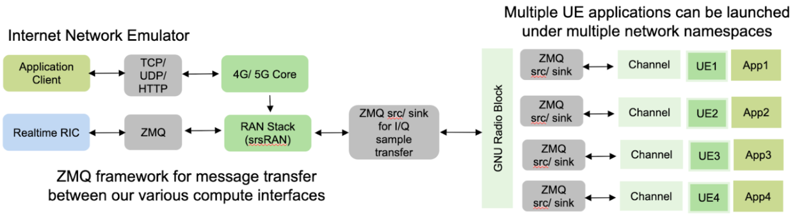

EdgeRIC: A Real Time Radio Intelligent Controller
Radio Access Networks (RANs) are increasingly softwarized and accessible via data-collection and control interfaces. RAN intelligent control (RIC) is an approach to manage these interfaces at different timescales. We introduce EdgeRIC, a real-time RIC co-located with the Distributed Unit (DU). It is decoupled from the RAN stack, and operates at the RAN timescale. EdgeRIC serves as the seat of real-time AI-in-the-loop for decision and control. It can access RAN and application-level information to execute AI-optimized and other policies in real-time (sub-millisecond).
Getting Started
This is a collaboration between University of California, San Diego and the Texas A&M University, College Station
EdgeRIC architecture
{kind=link}
EdgeRIC codebase
Research papers
EdgeRIC Features
Cellular Stack
Based on Software Radio Systems RAN (srsRAN)
Support for 5G NSA
ZeroMQ and GNU Radio based Multiple UE Support
Support for Ettus USRPs
EdgeRIC API
Low Overhead Messaging
Interface with Open AI Gym:
{kind=link}
Realtime Sync between RAN and RIC
EdgeRIC message formats
EdgeRIC emulator modulator
This module is for offline training where we can connect a number of UEs
{kind=link}
Installation Procedures:
EdgeRIC repository
Some sample information
Link to github repository:
Installation steps:
Terminal #1
$ ./dockerbuild_uhd.sh
$ ./dockerbuild_edgeric.sh
$ ./dockerrun_edgeric.sh host 0
(Inside container) $ ./run_gnuradio.sh
Terminal #2
$ ./dockerexec_edgeric.sh 0
(Inside container) $ cd srsran
(Inside container) $ ./run_srsran.sh --> It runs EPC, ENB, UE1 and UE2.
Terminal #3
$ ./dockerexec_edgeric.sh 0
(Inside container) $ ./iperf_server_ue1.sh
Terminal #4
$ ./dockerexec_edgeric.sh 0
(Inside container) $ ./iperf_client_ue1.sh
Terminal #5
$ ./dockerexec_edgeric.sh 0
(Inside container) $ ./iperf_server_ue2.sh
Terminal #6
$ ./dockerexec_edgeric.sh 0
(Inside container) $ ./iperf_client_ue2.sh
Terminal #7
$ ./dockerexec_edgeric.sh 0
(Inside container) $ cd PyTorch-RL-Custom-demo
(Inside container) $ ./run_logging.sh
Terminal #8
$ ./dockerexec_edgeric.sh 0
(Inside container) $ cd PyTorch-RL-Custom-demo
(Inside container) $ nano examples/params_edgeric.txt --> You should select algorithm in line 1 and then close the file
(Inside container) $ ./run_rl.sh 1000 1